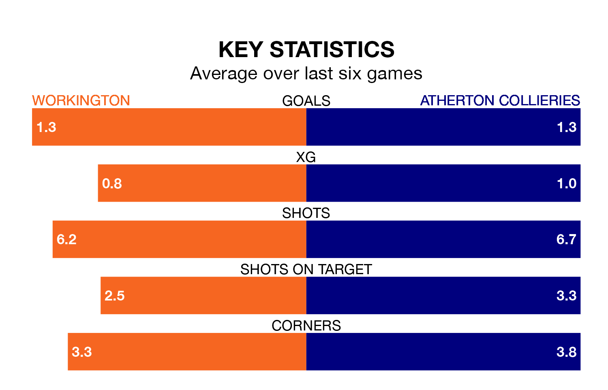

Workington are heavy favourites to keep all three points at home in Monday's kick-off against Atherton Collieries.
Workington, who sit 16th in the Northern Premier League with 36 games played, are priced at 1.4 to seal victory at Borough Park.
Sitting six places and 22 points behind them in the table, Atherton Collieries are 5.0 to win with *Betting Company*, while the draw is at 4.4.
Workington are in mixed form in the Northern Premier League, with two wins and a draw from their last six games.
With no wins and a draw over that period, Atherton Collieries's form is much worse – they have taken one point from 18, compared to the hosts' seven.
With 43 goals in 34 games so far this season, the away side are scoring at below the league average rate with 1.3 goals per game. And they are conceding more than average, letting in 85 goals at a rate of 2.5 per game.
Workington, meanwhile, are above average scorers, with 1.7 goals per game, compared to a league average of 1.6. They have conceded 2.0 goals per game.
Workington's last match was on Saturday, a 1-0 loss against Stafford Rangers.
Atherton Collieries lost 2-1 against Basford United last time out, also on Saturday.
Updated: 10:31 (UTC), 31/03/24